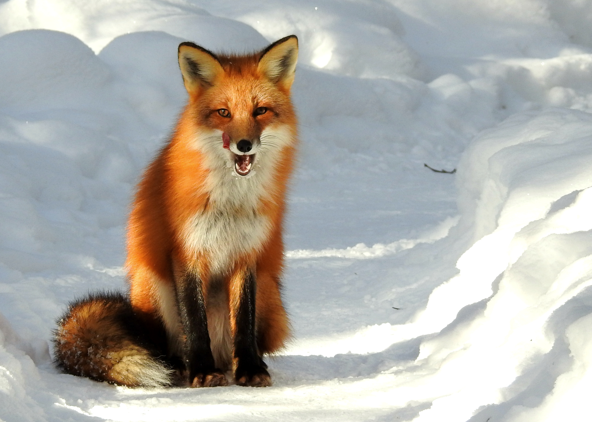

They range in size and color but are dog-like in appearance with pointed ears,
long snouts, thick fur, and long bushy tails. Wild foxes tend to live for around 6-7 years,
but some foxes have been known to be older than 13 in captivity. The wild fox hunts mice and other small mammals,
amphibians, and birds.
 Go back